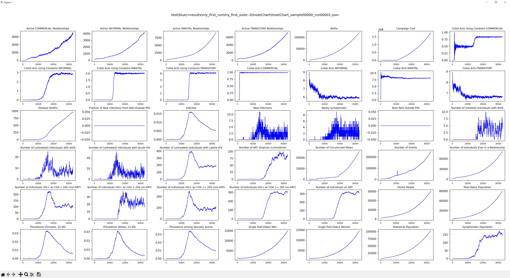
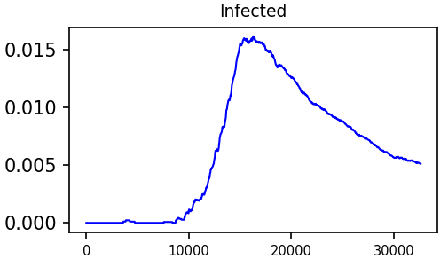

Run EMOD
Objective
The goal of this tutorial is for you to learn how to run a single simulation of EMOD-HIV using emodpy-workflow. There are many ways to run EMOD:
- From the command line
- Using emodpy-hiv
- Using emodpy-workflow
- On an HPC
- On your laptop
- As part of a parameter calibration
- As a parameter sweep
However, you will frequently want to run a single simulation when you creating different behaviors in your simulation or while debugging.
Prerequisites
To run EMOD per the instructions of this tutorial, you need to have done the followinng:
Control how and where EMOD runs
Before we can start using the "run" command, we first need to know where we can control the what and where EMOD runs. The manifest.py file is used by emopdy-workflow to know what EMOD executable binary to use, to specify a container for the executable binary to run in, to specify any simulation post processing scripts, etc. The idmtools.ini file is used to specify how EMOD is run on different platforms, where a "platform" is a computing device like an HPC or laptop.
View manifest.py
- In the root of your project directory, open the
manifest.pyfile. - On about line 39, you should see a variable called
executable_path. This tells emodpy-workflow where to get the EMOD executable binary. - Just below that you should also see a variable called
asset_collection_of_container. This is variable is used by emodpy-workflow to know what container to run EMOD in. (Containers reduce your need to install everything needed to run EMOD.) - For more information see manifest.py.
View idmtools.ini
- In the root of your project directory, open the
idmtools.inifile. -
Towards the top of the file, you should see something similar to the following:
[ContainerPlatform] type = Container job_directory = emodpy-jobs -
This tells emodpy-workflow that there is a platform called
ContainerPlatformthat is of typeContainerand that simulation jobs should go in to theemodpy-jobsdirectory. - For more information see idmtools.ini.
Create a results directory
Since we will be running EMOD multiple times, it is handy to put the results into their own directory.
-
Execute the following command in the root of your project (the directory that contains the
manifest.pyfile):mkdir resultsThis should create a directory called
resultsin your project directory.
Using the run command
To run EMOD, we will use the emodpy-workflow run command.
-
Execute the following command in the root of your project:
python -m emodpy_workflow.scripts.run -hThis should produce output similar to the following:
usage: run.py [-h] [-s SAMPLES_FILE] -N SUITE_NAME -F FRAMES [-f DOWNLOAD_FILENAMES] -o OUTPUT_DIR -p PLATFORM [-S SWEEP] optional arguments: -h, --help show this help message and exit -s SAMPLES_FILE, --samples SAMPLES_FILE csv file with base samples to use for simulation generation. Runs one sim per frame with configs as-is if not provided. -N SUITE_NAME, --suite-name SUITE_NAME Name of suite for experiments to be run within (Required). -F FRAMES, --frames FRAMES Comma-separated list of model frames to run (Required). -f DOWNLOAD_FILENAMES, --files DOWNLOAD_FILENAMES Filenames to download from scenario simulations. Paths relative to simulation directories. Comma-separated list if more than one (Default: do not download files) -o OUTPUT_DIR, --output-dir OUTPUT_DIR Directory to write receipt to (always) and scenario output files (if downloading). -p PLATFORM, --platform PLATFORM Platform to run simulations on (Required). -S SWEEP, --sweep SWEEP Python module to load with a sweep definition to generate extra experiments with (Default: no sweeping). -
For our purposes, we are going to focus on the following arguments:
- suite name - This is the name you give to a collection of experiments, 'my_first_suite'.
- frame - This is the name of the frame who's configuration is what you want to use. In our case, it will be 'baseline'
- output directory - The path of the directory to put the data for your run, say 'results/my_first_run'.
- platform - This is the name of a platform defined in your 'idmtools.ini' file. We will be using 'ContainerPlatform'.
-
Execute the following command:
python -m emodpy_workflow.scripts.run -N my_first_suite -F baseline -o results/my_first_run -p ContainerPlatformYou should see output similar to the following:
INI File Found: C:\work\emodpy-training\idmtools.ini Initializing ContainerPlatform with: { "job_directory": "emodpy-jobs" } Creating Suites: 100%|████████████████████████████████████████████████████████████████████████| 1/1 [00:00<?, ?suite/s] Creating Experiments: 0%| | 0/1 [00:00<?, ?experiment/s]>>>>>>>>>>>>>>>>>>>>>>>>>>>>>>>>>>>>>>>>>>>>>>>>>>>>>>>>>>>>>>>>>>>>>>>>>>>>>>>> Total parameter access counts: {} <<<<<<<<<<<<<<<<<<<<<<<<<<<<<<<<<<<<<<<<<<<<<<<<<<<<<<<<<<<<<<<<<<<<<<<<<<<<<<<< Creating Experiments: 100%|██████████████████████████████████████████████████████| 1/1 [00:06<00:00, 6.50s/experiment] Initializing objects for creation: 0simulation [00:00, ?simulation/s]>>>>>>>>>>>>>>>>>>>>>>>>>>>>>>>>>>>>>>>>>>>>>>>>>>>>>>>>>>>>>>>>>>>>>>>>>>>>>>>> Total parameter access counts: {} <<<<<<<<<<<<<<<<<<<<<<<<<<<<<<<<<<<<<<<<<<<<<<<<<<<<<<<<<<<<<<<<<<<<<<<<<<<<<<<< Commissioning Simulations: 100%|█████████████████████████████████████████████████| 1/1 [00:00<00:00, 17.86simulation/s] job_directory: C:\work\emodpy-training\emodpy-jobs suite: 2cf29edc-6b4d-459b-9542-3eae5c59a151 experiment: 8ae683e4-8af6-4cd9-b8a3-5c63a5a10a17 Experiment Directory: C:\work\emodpy-training\emodpy-jobs\my_first_suite_2cf29edc-6b4d-459b-9542-3eae5c59a151\my_first_suite_8ae683e4-8af6-4cd9-b8a3-5c63a5a10a17 Container ID: c3a6a8de63be You may try the following command to check simulations running status: idmtools container status 8ae683e4-8af6-4cd9-b8a3-5c63a5a10a17 Wrote run.py receipt to: results/my_first_run\experiment_index.csv Done with model experiment creation.INI File Found: /home/internal.idm.ctr/dbridenbecker/emodpy/my_tutorial/my_project/idmtools.ini Initializing ContainerPlatform with: { "job_directory": "emodpy-jobs" } Creating Suites: 100%|███████████████████████████████████████████████████████████████████████████████████| 1/1 [00:00<00:00, 1602.10suite/s] Creating Experiments: 0%| | 0/1 [00:00<?, ?experiment/s]>>>>>>>>>>>>>>>>>>>>>>>>>>>>>>>>>>>>>>>>>>>>>>>>>>>>>>>>>>>>>>>>>>>>>>>>>>>>>>>> Total parameter access counts: {} <<<<<<<<<<<<<<<<<<<<<<<<<<<<<<<<<<<<<<<<<<<<<<<<<<<<<<<<<<<<<<<<<<<<<<<<<<<<<<<< Creating Experiments: 100%|███████████████████████████████████████████████████████████████████████████| 1/1 [00:05<00:00, 5.15s/experiment] Initializing objects for creation: 0simulation [00:00, ?simulation/s]>>>>>>>>>>>>>>>>>>>>>>>>>>>>>>>>>>>>>>>>>>>>>>>>>>>>>>>>>>>>>>>>>>>>>>>>>>>>>>>> Total parameter access counts: {} <<<<<<<<<<<<<<<<<<<<<<<<<<<<<<<<<<<<<<<<<<<<<<<<<<<<<<<<<<<<<<<<<<<<<<<<<<<<<<<< Commissioning Simulations: 100%|██████████████████████████████████████████████████████████████████████| 1/1 [00:00<00:00, 67.47simulation/s] job_directory: /home/internal.idm.ctr/dbridenbecker/emodpy/my_tutorial/my_project/emodpy-jobs suite: 38dbabe0-e7f7-49ee-a8f3-983f3657b01d experiment: 07c1fa36-2f8b-41f0-a7fe-1afdf5e6233a Experiment Directory: /home/internal.idm.ctr/dbridenbecker/emodpy/my_tutorial/my_project/emodpy-jobs/my_first_suite_38dbabe0-e7f7-49ee-a8f3-983f3657b01d/my_first_suite_07c1fa36-2f8b-41f0-a7fe-1afdf5e6233a Container ID: c4d227306f49 You may try the following command to check simulations running status: idmtools container status 07c1fa36-2f8b-41f0-a7fe-1afdf5e6233a Wrote run.py receipt to: results/my_first_run/experiment_index.csv Done with model experiment creation.Note
This means that the simulations have been submitted to start running. It does not mean they are done.
Get status on your experiment
Notice how in the last four lines of the output that there is information about finding the status of your output. In this case, the following line
idmtools container status 8ae683e4-8af6-4cd9-b8a3-5c63a5a10a17
idmtools container status 07c1fa36-2f8b-41f0-a7fe-1afdf5e6233a
says get status on experiment with the given ID.
If you execute that line, you should see something similar to:
INI File Found: C:\work\emodpy-training\idmtools.ini
Experiment Directory:
c:/work/emodpy-training/emodpy-jobs/my_first_suite_2cf29edc-6b4d-459b-9542-3eae5c59a151/my_first_suite_8ae683e4-8af6-4cd
9-b8a3-5c63a5a10a17
Simulation Count: 1
SUCCEEDED (1)
FAILED (0)
RUNNING (0)
PENDING (0)
INI File Found: /home/internal.idm.ctr/dbridenbecker/emodpy/my_tutorial/my_project/idmtools.ini
Experiment Directory:
/home/internal.idm.ctr/dbridenbecker/emodpy/my_tutorial/my_project/emodpy-jobs/my_first_suite_38dbabe0-e7f7-49ee-a8f3-983f3657b01d/my_first_
suite_07c1fa36-2f8b-41f0-a7fe-1afdf5e6233a
Simulation Count: 1
SUCCEEDED (1)
FAILED (0)
RUNNING (0)
PENDING (0)
Note
This only works when using the Container Platform. To see status when using other platforms, please see the Command Line Interface documentation for your platform.
View the files produced when running an experiment
When using the Container and SLURM platforms, you can access the directories where the experiments and simulations are running. In our case, we are using the Container Platform and our idmtools.ini file told emodpy-workflow to put the files into a local folder called "emodpy-jobs". If we navigate into this folder, we can see all of the files associated with running the experiment and simulations. Let's go investigate.
-
From the main project directory execute the following commands:
cd emodpy-jobs dircd emodpy-jobs ls -lYou should see something similar to:
Directory of C:\work\my_training\my_project\emodpy-jobs 09/02/2025 01:30 PM <DIR> . 09/02/2025 01:30 PM <DIR> .. 09/02/2025 01:30 PM <DIR> my_first_suite_2f7f3943-0814-418a-9792-604fc7db2a31total 4 drwxrwxr-x 3 dbridenbecker dbridenbecker 4096 Sep 5 12:32 my_first_suite_38dbabe0-e7f7-49ee-a8f3-983f3657b01dNotice the directory
my_first_suite_2f7f3943-0814-418a-9792-604fc7db2a31starts with the name we gave the suite. -
Look in the the suite directory by executing commands similar to the following (your directory name is likely different):
cd my_first_suite_2f7f3943-0814-418a-9792-604fc7db2a31 dircd my_first_suite_38dbabe0-e7f7-49ee-a8f3-983f3657b01d ls -lYou should see something similar to the following:
Directory of C:\work\my_training\my_project\emodpy-jobs\my_first_suite_2f7f3943-0814-418a-9792-604fc7db2a31 09/02/2025 01:30 PM <DIR> . 09/02/2025 01:30 PM <DIR> .. 09/02/2025 01:30 PM 484 metadata.json 09/02/2025 01:30 PM <DIR> my_first_suite_857c15be-a4b9-4d46-86f5-d0c0f9a2fbe5total 8 -rw-rw-r-- 1 dbridenbecker dbridenbecker 515 Sep 5 12:32 metadata.json drwxrwxr-x 4 dbridenbecker dbridenbecker 4096 Sep 5 12:32 my_first_suite_07c1fa36-2f8b-41f0-a7fe-1afdf5e6233aYes, it looks very similar, but this is the experiment directory.
-
Look in the experiment directory by executing commands similar to the following (your directory name is likely different): === "Windows"
=== "Linux"cd my_first_suite_857c15be-a4b9-4d46-86f5-d0c0f9a2fbe5 dircd my_first_suite_07c1fa36-2f8b-41f0-a7fe-1afdf5e6233a ls -lYou should see something similar to the following:
Directory of C:\work\my_training\my_project\emodpy-jobs\my_first_suite_2f7f3943-0814-418a-9792-604fc7db2a31\my_first_suite_857c15be-a4b9-4d46-86f5-d0c0f9a2fbe5 09/02/2025 01:30 PM <DIR> . 09/02/2025 01:30 PM <DIR> .. 09/02/2025 01:30 PM <DIR> 84efd93c-b13a-4bd4-ae54-f4ac5ab7aa9d 09/02/2025 01:30 PM <DIR> Assets 09/02/2025 01:30 PM 229 batch.sh 09/02/2025 01:30 PM 1,006 metadata.json 09/02/2025 01:30 PM 179 run_simulation.sh 09/02/2025 01:30 PM 0 stderr.txt 09/02/2025 01:30 PM 181 stdout.txttotal 24 drwxrwxr-x 3 dbridenbecker dbridenbecker 4096 Sep 5 12:32 45eefc10-bf1d-48bf-a7f0-d90d1c94bd8f drwxrwxr-x 2 dbridenbecker dbridenbecker 4096 Sep 5 12:32 Assets -rwxrwxrwx 1 dbridenbecker dbridenbecker 229 Sep 5 12:32 batch.sh -rw-rw-r-- 1 dbridenbecker dbridenbecker 1067 Sep 5 12:32 metadata.json -rwxrwxrwx 1 dbridenbecker dbridenbecker 179 Sep 5 12:32 run_simulation.sh -rw-r--r-- 1 root root 0 Sep 5 12:32 stderr.txt -rw-r--r-- 1 root root 181 Sep 5 12:32 stdout.txtThe experiment directory will have one folder for each simulation of the experiment. In this case, there is only one simulation with ID:
84efd93c-b13a-4bd4-ae54-f4ac5ab7aa9d45eefc10-bf1d-48bf-a7f0-d90d1c94bd8fFor the most part, you do not need to know about the other files in the directory. However, the
metadata.jsonfile does contain some details about the experiment and its simulations. -
Look in the simulation directory
84efd93c-b13a-4bd4-ae54-f4ac5ab7aa9dcd 84efd93c-b13a-4bd4-ae54-f4ac5ab7aa9d dircd 45eefc10-bf1d-48bf-a7f0-d90d1c94bd8f ls -lYou should see something similar to the following:
Directory of C:\work\my_training\my_project\emodpy-jobs\my_first_suite_2f7f3943-0814-418a-9792-604fc7db2a31\my_first_suite_857c15be-a4b9-4d46-86f5-d0c0f9a2fbe5\84efd93c-b13a-4bd4-ae54-f4ac5ab7aa9d 09/02/2025 01:30 PM <DIR> . 09/02/2025 01:30 PM <DIR> .. 09/02/2025 01:30 PM <SYMLINKD> Assets [..\Assets] 09/02/2025 01:30 PM 206,144 campaign.json 09/02/2025 01:30 PM 7,226 config.json 09/02/2025 01:32 PM 2 job_status.txt 09/02/2025 01:30 PM 9,310 metadata.json 09/02/2025 01:32 PM <DIR> output 09/02/2025 01:32 PM 30,139 status.txt 09/02/2025 01:30 PM 0 stderr.txt 09/02/2025 01:32 PM 120,255 stdout.txt 09/02/2025 01:30 PM 330,404 tmpncr6smi4.json 09/02/2025 01:30 PM 762 _run.shtotal 704 lrwxrwxrwx 1 dbridenbecker dbridenbecker 9 Sep 5 12:32 Assets -> ../Assets -rw-rw-r-- 1 dbridenbecker dbridenbecker 206144 Sep 5 12:32 campaign.json -rw-rw-r-- 1 dbridenbecker dbridenbecker 7257 Sep 5 12:32 config.json -rw-r--r-- 1 root root 2 Sep 5 12:34 job_status.txt -rw-rw-r-- 1 dbridenbecker dbridenbecker 9393 Sep 5 12:32 metadata.json drwxr-xr-x 2 root root 4096 Sep 5 12:34 output -rwxrwxrwx 1 dbridenbecker dbridenbecker 762 Sep 5 12:32 _run.sh -rw-r--r-- 1 root root 30139 Sep 5 12:34 status.txt -rw-r--r-- 1 root root 0 Sep 5 12:32 stderr.txt -rw-r--r-- 1 root root 120255 Sep 5 12:34 stdout.txt -rw-rw-r-- 1 dbridenbecker dbridenbecker 320723 Sep 5 12:32 tmpu8tbs9qp.jsonThe simulation directory is the directory where a single realization/simulation of EMOD is being run. If you have simulations that are failing or not running to completion, you should look at the
stderr.txtfile and thestdout.txtfile. These files can contain error messages directly from the EMOD executable. Finally, theoutputdirectory contains the report data that was generated for this realization/simulation. (We will be using thedownloadcommand to organize our report files, but if that becomes limiting, you can access them directly.)Note
If something is failing or not working like you expect, an EMOD developer will need the contents of this directory in order to duplicate and debug the issue.
-
View the end of the
stdout.txtfile.Use a text editor to view
stdout.txtfile and scroll to the bottom. You should see something similar to the following:00:01:56 [0] [I] [Simulation] Update(): Time: 32606.4 Year: 2049.8 Rank: 0 StatPop: 102414 Infected: 529 00:01:57 [0] [I] [Simulation] Update(): Time: 32636.8 Year: 2049.9 Rank: 0 StatPop: 102636 Infected: 528 00:01:57 [0] [I] [Simulation] Finalizing 'InsetChart.json' reporter. 00:01:57 [0] [I] [Simulation] Finalized 'InsetChart.json' reporter. 00:01:57 [0] [I] [Simulation] Finalizing 'ReportHIVByAgeAndGender.csv' reporter. 00:01:57 [0] [I] [Simulation] Finalized 'ReportHIVByAgeAndGender.csv' reporter. 00:01:57 [0] [I] [Eradication] Controller executed successfully.The
stdout.txtfile contains information that EMOD can log to standard out. For example, the line that has[Simulation] Update(): Time:in it is printed each time step of the simulation. Seeing these being written out can be helpful to know that the simulation is still running. The line that containsController executed successfullylets us know that the simulation has finished. This file can contain warnings or error messages. This can be a great place to look when starting to debug why your simulations are not running. -
Go back to the project directory -
my_projectcd .. cd .. cd .. cd .. cdcd .. cd .. cd .. cd .. pwdYou should see something similar to:
C:\work\my_training\my_project>/home/internal.idm.ctr/dbridenbecker/emodpy/my_tutorial/my_projectYou should be back to your project directory.
View the results/my_first_run folder and the "receipt file"
In our run command, you specified the output as -o results/my_first_run.
-
Look at the contents of the
results/my_first_runfolderdir results\my_first_runls -l results/my_first_runYou should see something similar to the following:
Directory of C:\work\my_training\my_project\results\my_first_run 09/02/2025 02:52 PM <DIR> . 09/02/2025 02:52 PM <DIR> .. 09/02/2025 01:30 PM 275 experiment_index.csvtotal 4 -rw-rw-r-- 1 dbridenbecker dbridenbecker 309 Sep 5 12:32 experiment_index.csv -
Look at the contents of the
results/my_first_run/experiment_index.csvtype results\my_first_run\experiment_index.csvcat results/my_first_run/experiment_index.csvYou should see something similar to the following:
index,frame,experiment_id,experiment_name,experiment_directory 0,baseline,857c15be-a4b9-4d46-86f5-d0c0f9a2fbe5,my_first_suite,C:\work\my_training\my_project\emodpy-jobs\my_first_suite_2f7f3943-0814-418a-9792-604fc7db2a31\my_first_suite_857c15be-a4b9-4d46-86f5-d0c0f9a2fbe5index,frame,experiment_id,experiment_name,experiment_directory 0,baseline,07c1fa36-2f8b-41f0-a7fe-1afdf5e6233a,my_first_suite,/home/internal.idm.ctr/dbridenbecker/emodpy/my_tutorial/my_project/emodpy-jobs/my_first_suite_38dbabe0-e7f7-49ee-a8f3-983f3657b01d/my_first_suite_07c1fa36-2f8b-41f0-a7fe-1afdf5e6233aThis file can provide you information about the experiment and where the files are located. We will use it in our next step to download the report data.
Download the results/output/reports
Now that we have seen all of the files created when running an experiment, let's get back to our project directory and get our report data.
-
Execute the
downloadcommand to see what the options arepython -m emodpy_workflow.scripts.download -hYou should see something similar to the following:
(env) C:\work\my_training\my_project>python -m emodpy_workflow.scripts.download -h usage: download.py [-h] [-f FILES] [-r RECEIPT_FILE] [-s SAMPLES_FILE] [--suite-id SUITE_ID] [--exp-id EXPERIMENT_ID] [-o OUTPUT_DIR] -p PLATFORM optional arguments: -h, --help show this help message and exit -f FILES, --files FILES Comma-separated list of simulation directory relative file paths to download (Default: output\ReportHIVByAgeAndGender.csv) -r RECEIPT_FILE, --receipt RECEIPT_FILE Commissioning receipt file path. Either set -r OR (--suite-id and -o) OR (--exp-id and -o) OR (-s and -o). -s SAMPLES_FILE, --samples SAMPLES_FILE Resampled parameter sets csv file of simulations to plot. Either set -r OR (--suite-id and -o) OR (--exp-id and -o) OR (-s and -o). --suite-id SUITE_ID Id of suite to download simulations from. Either set -r OR (--suite-id and -o) OR (--exp-id and -o) OR (-s and -o). --exp-id EXPERIMENT_ID Id of experiment to download simulations from. Either set -r OR (--suite-id and -o) OR (--exp- id and -o) OR (-s and -o). -o OUTPUT_DIR, --output-dir OUTPUT_DIR Directory to write output into. Either set -r OR (--suite-id and -o) OR (--exp-id and -o) OR (-s and -o). -p PLATFORM, --platform PLATFORM Platform to download from (Required). -
Execute the
downloadcommand to download the InsetChart.json filespython -m emodpy_workflow.scripts.download -f "output/InsetChart.json" -r results\my_first_run\experiment_index.csv -p ContainerPlatformpython -m emodpy_workflow.scripts.download -f "output/InsetChart.json" -r results/my_first_run/experiment_index.csv -p ContainerPlatformIn this command, we specified the following:
-f "output/InsetChart.json- EMOD puts the report files into a subfolder called "outputs". In this case, we want the InsetChart.json report since it contains a lot of high level statistics.-r results/my_first_run/experiment_index.csv- Since we have a "receipt" file, we use it here to tell thedownloadcommand where the data is.-p ContainerPlatform- This tells thedownloadcommand to use the Container protocol when getting data.
You should see something similar to the following:
INI File Found: /home/internal.idm.ctr/dbridenbecker/emodpy/my_tutorial/my_project/idmtools.ini Initializing ContainerPlatform with: { "job_directory": "emodpy-jobs" } Waiting on Experiment my_first_suite to Finish running: 100%|█████████████████████████████████████| 1/1 [00:00<00:00, 2343.19simulation/s] 100%|███████████████████████████████████████████████████████████████████████████████████████████████████████| 1/1 [00:00<00:00, 25.25it/s] Running Analyzer Reduces: 100%|████████████████████████████████████████████████████████████████████████████| 1/1 [00:00<00:00, 465.67it/s] Done downloading files to: /home/internal.idm.ctr/dbridenbecker/emodpy/my_tutorial/my_project/results/my_first_runAs you can tell, there are many ways to specify the download of the data. The how-tos can show you different ways to do it.
-
See that a new folder was added to the `results/my_first_run:
dir results\my_first_runls -l results/my_first_runNow when we look in this folder we should see something similar to the following:
Directory of C:\work\my_training\my_project\results\my_first_run 09/02/2025 02:52 PM <DIR> . 09/02/2025 02:52 PM <DIR> .. 09/02/2025 01:30 PM 275 experiment_index.csv 09/02/2025 02:52 PM <DIR> my_first_suite--0total 8 -rw-rw-r-- 1 dbridenbecker dbridenbecker 309 Sep 5 12:32 experiment_index.csv drwxrwxr-x 3 dbridenbecker dbridenbecker 4096 Sep 5 15:00 my_first_suite--0The
my_first_suite--0directory was created. -
See that a folder was created with the name of the report:
dir results\my_first_run\my_first_suite--0ls -l results/my_first_run/my_first_suite--0You should see something similar to the following:
Directory of C:\work\my_training\my_project\results\my_first_run\my_first_suite--0 09/02/2025 02:52 PM <DIR> . 09/02/2025 02:52 PM <DIR> .. 09/02/2025 02:52 PM <DIR> InsetCharttotal 4 drwxrwxr-x 2 dbridenbecker dbridenbecker 4096 Sep 5 15:00 InsetChartNotice that
InsetChartis the base name of the report file we requested to download. -
See where the data has been put by executing the following command:
dir results\my_first_run\my_first_suite--0\InsetChartls -l results/my_first_run/my_first_suite--0/InsetChartYou should see something similar to the following:
Directory of C:\work\my_training\my_project\results\my_first_run\my_first_suite--0\InsetChart 09/02/2025 02:52 PM <DIR> . 09/02/2025 02:52 PM <DIR> .. 09/02/2025 02:52 PM 300,997 InsetChart_sample00000_run00001.jsontotal 296 -rw-rw-r-- 1 dbridenbecker dbridenbecker 300997 Sep 5 15:00 InsetChart_sample00000_run00001.jsonThe directory should contain one file for each simulation of the experiment. In this case, there is only one.
Plot the results
Now that we have our data downloaded, let's plot the data to see what happened in the simulation.
-
Execute the following command to see what options are available when plotting InsetChart.
python -m emodpy_hiv.plotting.plot_inset_chart -hYou should see something similar to the following:
(env) C:\work\my_training\my_project>python -m emodpy_hiv.plotting.plot_inset_chart -h usage: plot_inset_chart.py [-h] [-d [DIR]] [-t [TITLE]] [-o OUTPUT] [reference] [comparison1] [comparison2] [comparison3] positional arguments: reference Reference InsetChart filename comparison1 Comparison1 InsetChart filename comparison2 Comparison2 InsetChart filename comparison3 Comparison3 InsetChart filename optional arguments: -h, --help show this help message and exit -d [DIR], --dir [DIR] Directory, or parent directory that contains subdirectories, of InsetChart.json files -t [TITLE], --title [TITLE] Title of Plot -o OUTPUT, --output OUTPUT If provided, a directory will be created and images saved to the folder. If not provided, it opens windows.Note
If you are executing these commands via SSH or on Codespaces, you will need to use the
-oor--outputoption to create an image file that you can view. -
Execute the following command to plot the data in InsetChart.json:
python -m emodpy_hiv.plotting.plot_inset_chart -d results\my_first_run\my_first_suite--0\InsetChartpython -m emodpy_hiv.plotting.plot_inset_chart -d results/my_first_run/my_first_suite--0/InsetChartThis should produce an image or window that looks like the following:

If we look at the plot in column three, row three, you see something like the following:

where prevalence goes up to about 1.5% in the middle of the simulation and then declines to about 0.5%.
Next up: Modifying the simulation
Now that you have run EMOD once, investigate the other tutorials where you can modify the simulation and run the model.